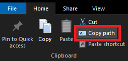

This website was created by MSiti Software (Person creator: "MaayanM.C").
This Website's purpose is to Generate EXE files on Windows 10 and above, by just using simple .NET Framework languages like "Visual Basic, JScript.NET and C#.". This website can easily compile for you your C# code without you needing to install anything on your computer! You just need to enter here the path of your C# source code file and then it will generate you a specific code that you will need to copy it, then you will need to go to your Windows Search, and then paste this code in the Windows Search and press enter, then if everything worked right there should be a new EXE file waiting for you in the same folder where your source code was, and it has the same name as the source code file had. That's it :)
Follow these steps to generate the EXE successfully:
1: First of all you need to have a ready source code file of one of these programming languages:- C# - Visual Basic - JScript.NET
2: Once you have a ready source code file, you will need to select it and copy its full path on your computer.

3: Now, go back here and paste the path in the "Enter the path of the source file:".
4: If there are assemblies in your code that usually need to be referenced, you can type their name in "References for assembly? (optional):".
5: If you want your EXE to avoid creating a console window when starting up, check "Make Windows Application? (optional):".
6: Now, click on the "Generate Compilation Call" button.
7: You will now see a long weird code in the "The code to paste in the Windows Search and pressing Enter:". Select all of it and copy it.
8: Paste this in your Windows Search and press Enter.
9: Go back to your the folder where your source code file is, you will now see there your EXE, it will have the same name as the source code file had. Thats it. Enjoy :)